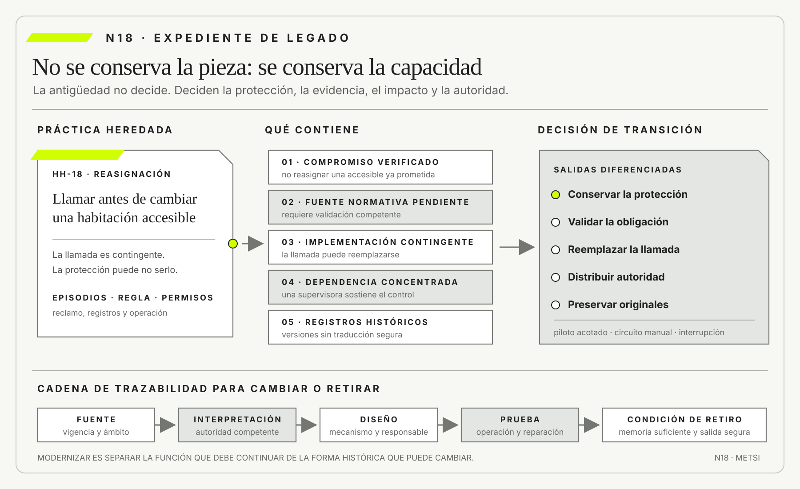

Manny Lehman
Programs, Life Cycles, and Laws of Software EvolutionProceedings of the IEEE · 1980
Estudió la evolución continua de sistemas usados en entornos reales.

N18 convierte legado, regulación y documentación en objetos de análisis con valor, costo, evidencia y ciclo de vida.
Legado, regulación y documentación como valor, restricción y evidencia
Ruta priorizada: 1 h 20 min a 1 h 40 min. Núcleo de lectura: 60 a 75 min; preparación: 20 a 25 min. Las extensiones agregan 30 a 45 min y profundizan el recorrido.

Nota. SIN NUM. identifica aparatos de orientación y referencia.
Seis referentes y las obras principales utilizadas para construir N18.
Estudió la evolución continua de sistemas usados en entornos reales.

Mostró el valor de ocultar decisiones y diseñar para el cambio.

Sistematizó la refactorización como cambio incremental, observable y protegido por pruebas.

Codificó prácticas de desarrollo seguro y su adaptación a sistemas con inteligencia artificial.

Contribuyó a integrar riesgo, procedencia y seguridad dentro del ciclo de desarrollo.

Impulsó estándares abiertos e interoperables que permiten separar información, identificación y plataforma.
N18 no resume estas fuentes ni las convierte en receta. Las pone en tensión para construir juicio profesional.
¿Cómo cambiar un sistema heredado sin suponer que todo lo viejo es inútil, que la norma es sólo un trámite o que la documentación copia la realidad?

La modernización deja de ser sustitución automática y pasa a ser un juicio de continuidad responsable.
Una universidad decide reemplazar una pantalla antigua usada para autorizar equivalencias durante una transición de plan de estudios. El formulario duplica datos, exige una firma presencial y no aparece en el manual vigente. El equipo propone eliminarlo porque la plataforma nueva ya valida correlatividades de manera automática.
Durante la prueba, una secretaria académica explica que la firma no confirma correlatividades. Conserva la decisión que permite a estudiantes del plan anterior completar una materia cuya equivalencia cambió después de su inscripción. La regla nació en una resolución académica local, quedó codificada como permiso y se sostuvo mediante capacitación oral. La documentación describe el camino ordinario; el legado conserva una excepción autorizada cuya fuente dejó de estar vinculada.
Conservar todo por temor inmovilizaría el servicio. Eliminar todo por modernidad borraría evidencia y control. El problema no es decidir si el legado es bueno o malo, sino reconstruir qué conocimiento, dependencia, derecho y riesgo contiene cada pieza.
La universidad abre un expediente. Vincula configuración, procedimiento, resolución, expedientes recientes y personas que ejecutan la excepción. Distingue mandato vigente, solución histórica, deuda, adaptación local y residuo sin uso. Recién entonces diseña una transición.
El primer recorrido produce una sorpresa adicional. La firma también crea un momento en que Alumnos verifica identidad y Secretaría Académica puede detener una inscripción incompatible. Reemplazarla con una regla automática más rápida eliminaría esa coordinación si el nuevo flujo no asignara la misma autoridad. El equipo comprende que preservar el dato no alcanza: debe preservar la posibilidad de interrumpir, explicar y reparar.
La revisión descubre que varias firmas se solicitan por costumbre aun cuando el plan y la equivalencia no cambiaron. Allí la práctica agrega demora sin proteger ninguna decisión. La misma forma contiene una excepción legítima y un residuo. En lugar de conservarla o borrarla entera, se separan condiciones. El caso alcanzado por la resolución exige autorización trazable; el ordinario puede automatizarse; cualquier discrepancia vuelve a una persona competente.
La transición se ensaya con un expediente previsto por la resolución y otro que queda fuera de su alcance. En el primero, la autorización se conserva. En el segundo, el sistema rechaza correctamente la excepción y registra la razón. La prueba evita universalizar una práctica local y convierte conocimiento tácito en una decisión institucional verificable.
La documentación cambia de función. Ya no intenta fotografiar todo el sistema. Registra decisiones, fuentes normativas, interfaces, pruebas y condiciones de retiro. La regulación tampoco aparece como barrera externa: organiza quién puede decidir, qué debe demostrarse y qué daño no puede aceptarse.
N18 recibe de HH-17 una lógica de intervención y la somete a la realidad instalada. Enseña que el pasado está presente en datos, contratos, hábitos, infraestructura y expectativas, y que transformar exige conocer qué se puede cambiar, qué debe preservarse y qué necesita autorización.
HH-17 había limitado la confirmación anticipada a dos pisos. Al reconstruir tres reasignaciones, Lucía Ferreyra muestra que una llamada previa a Housekeeping evita cambiar una habitación accesible ya comprometida. Mariela Benítez confirma que el PMS no distingue limpieza terminada de disponibilidad para una persona con requerimientos específicos. La llamada parece redundante en el procedimiento escrito, pero conserva una protección que el rediseño no modeló.

Federico Müller reúne configuración del PMS, permisos de cerraduras, registros de llamadas, el reclamo que originó la práctica y las condiciones del canal de venta. Camila Duarte aporta la promesa publicada, Ricardo Sosa identifica quién repara cuando los estados divergen y Mariela aporta testimonio operacional sobre las condiciones que vuelven utilizable una habitación.
Esas evidencias demuestran un compromiso institucional y comercial de no reasignar una habitación accesible ya prometida. No constituyen una fuente normativa ni demuestran por sí solas si existe una obligación legal adicional. HH-18 abre un registro separado y considera identificada una fuente normativa sólo cuando una autoridad competente consigna el instrumento, la disposición aplicable, su vigencia, su ámbito y quién puede interpretarla.
Hasta completar esa validación, el fundamento jurídico permanece explícitamente pendiente.
Esa separación produce cuatro decisiones diferentes. La protección comprometida se conserva provisionalmente como restricción de diseño mientras se valida su alcance normativo. La llamada puede reemplazarse porque es una implementación contingente. La dependencia de la supervisora se reduce mediante roles y escalamiento. Los registros se redefinen para mostrar no sólo que alguien llamó, sino qué estado se verificó, quién decidió y qué reparación siguió. Modernizar deja de ser un verbo único.
Federico propone importar todos los registros históricos al nuevo módulo. Lucía advierte que las categorías cambiaron tres veces y que mezclar períodos volvería incomparable la evidencia. HH-18 conserva el original, documenta cada correspondencia y marca los valores que no admiten traducción segura. La decisión sacrifica una apariencia de base única para proteger significado. Las consultas que atraviesan versiones deben declarar qué reglas de transformación utilizaron.
Camila plantea que una confirmación más rápida aumenta conversión. Elena exige separar ese beneficio de la protección ya comprometida. El piloto mide tiempo y abandono, pero la puerta de salida se define por ausencia de reasignación indebida, capacidad de detección y reparación. Un indicador comercial favorable no compensa la pérdida de esa protección. Si la revisión competente identifica una obligación normativa aplicable, su fuente, ámbito y autoridad interpretativa se incorporarán al expediente y podrán volver más estricto el criterio de decisión.
Elena Acosta autoriza reemplazar la llamada por una verificación trazable sólo durante un piloto acotado. La prueba compara un turno ordinario con otro sin la supervisora habitual, conserva el circuito manual y detiene la transición ante una reasignación indebida, una pérdida de procedencia o una demora que deje al huésped sin alternativa. La evidencia no prueba que lo nuevo sea moderno, sino que mantiene la protección comprometida y la capacidad de reparación.
HH-18 queda revisable mediante dos registros vinculados y no intercambiables: compromiso institucional verificado con evidencia operacional, y fuente normativa pendiente con los campos necesarios para su validación competente. Cada registro conserva decisión de diseño, responsable, población afectada y fecha de revisión. HH-19 recibirá ambos estados por separado para comparar realización y abastecimiento sin atribuir autoridad normativa al testimonio de Mariela, presentar como resuelto un fundamento todavía abierto ni convertir la práctica heredada en requisito eterno.
El legado, la regulación y la documentación pueden conservar valor, imponer restricciones y aportar evidencia. Modernizar no significa reemplazar todo de manera automática. Exige decidir qué debe continuar, qué necesita cambiar y qué puede retirarse sin perder una capacidad importante. Para hacerlo, hay que separar compromisos verificados, obligaciones normativas validadas e interpretaciones todavía pendientes. La antigüedad de una práctica, por sí sola, no le da autoridad.
Para pasar de la idea a una decisión hace falta examinar qué capacidad, derecho, riesgo o memoria sostiene cada tecnología, norma o documento antes de conservarlo, sustituirlo o retirarlo. Así se distinguen descripción, explicación y compromiso, tres movimientos que suelen mezclarse. El resultado es una argumentación que otra persona puede revisar sin tener que aceptar la autoridad de quien la produjo.
Consideremos un ejemplo de baja escala: una planilla duplica trabajo pero registra excepciones que el sistema nuevo ignora; eliminarla sin capturar ese conocimiento debilita la operación. Seguirlo de punta a punta permite reconocer primero el fenómeno simple y luego las relaciones que vuelven insuficiente la explicación inicial. Esa es la progresión de lo general a lo particular que propone la colección.
La tesis no autoriza cualquier uso. Su contraejemplo es usar cumplimiento para clausurar toda alternativa o tratar documentación como burocracia hasta que un incidente exige explicar decisiones y versiones. Allí se vuelve visible que una técnica correcta puede ser inadecuada para cierto riesgo, población o momento. La calidad depende del uso, no del prestigio de la herramienta.
Aplicado a Hotel Horizonte, registros de llaves, contratos de canal y procedimientos de emergencia se revisan por la protección que conservan, no por su antigüedad. La continuidad del caso permite comparar la nueva lectura con las anteriores y evita inventar una situación distinta para confirmar cada concepto.
De aquí se desprende una responsabilidad concreta: modernizar con hipótesis de retiro, prueba y reversión; N19 comparará configurar, integrar, construir y no automatizar. Profesores y estudiantes pueden discutirla con ejemplos, objeciones y evidencia; no necesitan memorizar una definición aislada ni aceptar una receta cerrada.
La modernización separa la capacidad, el derecho y la evidencia que deben continuar de la implementación heredada que puede adaptarse o retirarse.

N17 entrega un mapa de decisiones que separa compromisos predictivos, iterativos, incrementales, adaptativos y experimentales, junto con sus puertas de evidencia. N18 usa ese mapa para distinguir qué restricciones provienen de obligaciones vigentes, qué capacidades heredadas conservan valor y qué documentación debe acompañar cualquier sustitución.
N19 evaluará alternativas de realización y abastecimiento. N18 no decide todavía si conviene construir, configurar, integrar, tercerizar, mantener trabajo manual o no automatizar.
Las fuentes se distribuyen entre evolución de software, diseño para el cambio, información de ciclo de vida, obligaciones normativas, desarrollo seguro y procedencia. N18 no las presenta como una lista equivalente: cada familia permite responder una pregunta diferente sobre qué preservar, quién autoriza, qué demostrar y cómo retirar.
Lehman, M. M. explica por qué un sistema usado continúa cambiando junto con su entorno.
Parnas, D. L. trata decisiones de diseño y ocultamiento de información como preparación para el cambio.
Feathers, M. vincula modificación segura de legado con caracterización y pruebas.
ISO/IEC/IEEE sitúa desarrollo, operación, mantenimiento y retiro en un ciclo de vida común.
ISO/IEC/IEEE ordena información de ciclo de vida por propósito y contenido, no por acumulación documental.
ISO/IEC/IEEE integra adquisición, desarrollo, operación, mantenimiento y retiro, incluso cuando esas actividades se superponen en un sistema heredado.
La Ley argentina 25.326 introduce obligaciones sobre calidad, finalidad, seguridad, derechos y responsabilidad en el tratamiento de datos personales.
La Unión Europea vincula el uso de inteligencia artificial con riesgo, obligaciones, supervisión y responsabilidades que deben conservarse durante una modernización.
Scarfone, K., Souppaya, M. y Dodson, D. aportan desde NIST prácticas de desarrollo seguro integradas al ciclo de vida.
NIST SP 800-218A extiende el desarrollo seguro a prácticas específicas para modelos generativos de doble uso.
CISA desplaza seguridad desde el usuario hacia decisiones de producto y proveedor.
W3C Provenance Working Group fundamenta procedencia mediante entidades, actividades y agentes.
Fowler, M. convierte la refactorización en una secuencia de cambios pequeños cuyo comportamiento puede comprobarse. Berners-Lee, T. muestra que los estándares abiertos y los identificadores compartidos sostienen interoperabilidad más allá de una implementación o proveedor. En N18, ambos aportes conectan cambio seguro y posibilidad institucional de continuar, migrar o retirar.
Las tradiciones entran en tensión. Parnas favorece ocultar decisiones para localizar cambio, mientras la procedencia exige hacer visibles relaciones suficientes para reconstruir cómo se produjo una evidencia. No hay contradicción necesaria: se encapsula la implementación, pero se documentan contratos, transformaciones y responsables que una decisión posterior necesita conocer. Feathers aporta pruebas de caracterización para observar comportamiento antes de modificar; esas pruebas protegen continuidad, aunque no determinan si el comportamiento es legítimo y debe conservarse.
Las leyes de evolución de Lehman impiden imaginar el legado como objeto estático. Un sistema en uso cambia porque cambian organización, entorno y expectativas, incluso si su código permanece. La documentación debe registrar esa coevolución y no sólo versiones técnicas. ISO/IEC/IEEE amplía la mirada hacia operación, mantenimiento y retiro; NIST y CISA agregan que seguridad y suministro son responsabilidades de diseño. La Ley 25.326 y el marco europeo de IA introducen derechos y deberes que limitan qué puede optimizarse.
N18 usa las fuentes para asignar preguntas, no para coronar una teoría. Evolución explica por qué el pasado sigue activo; modularidad ayuda a localizar decisiones; pruebas reducen riesgo de cambio; procedencia sostiene evidencia; regulación fija límites y autoridad. Cuando una recomendación entra en conflicto con otra, HH-18 conserva la tensión y decide según episodio, consecuencia y competencia institucional.
En simple: El legado sociotécnico reúne tecnología, datos, rutinas, contratos, conocimientos y relaciones de autoridad acumuladas. Su edad no determina su valor ni su riesgo: importa qué capacidad sostiene, para quién y con qué dependencia.
Ejemplo cercano: Analizarlo exige separar la pieza visible del sistema de trabajo que creció alrededor. Una pantalla antigua puede esconder conciliaciones confiables; una plataforma reciente puede depender de una sola persona o de una regla que nadie documentó.
En Hotel Horizonte, el archivo nocturno del PMS conserva la secuencia con la que Recepción resuelve discrepancias. Antes de retirarlo, HH-18 debe probar qué evidencia y qué capacidad reemplazarán esa función.
La capacidad no siempre coincide con la intención original. Un reporte diseñado para conciliación contable puede haberse convertido en la única alerta temprana sobre habitaciones duplicadas. Una autorización creada para un proveedor antiguo puede hoy limitar un daño que nadie había previsto. Esto no vuelve intocable la pieza. Obliga a describir el mecanismo actual antes de intervenir: qué señal produce, quién la interpreta, qué decisión permite y qué ocurre cuando falta.
La lectura sociotécnica también evita atribuir la estabilidad sólo al software. Un turno puede funcionar porque dos personas coordinan por mensajería, una planilla compensa estados atrasados y una supervisora conoce excepciones históricas. Si el reemplazo copia únicamente pantallas y datos, elimina parte del sistema efectivo. HH-18 observa trabajo prescripto, trabajo real, acuerdos informales y condiciones materiales. La divergencia entre ellos es evidencia sobre dónde reside la capacidad.
El criterio de conservación no es nostalgia ni costo hundido. Una pieza merece continuidad provisional cuando sostiene una función necesaria que la alternativa todavía no realiza, y cuando el riesgo de mantenerla permanece controlado. Merece retiro cuando su función desapareció, puede reemplazarse con evidencia o produce una exposición injustificable. Entre ambos extremos existe adaptación: aislar, documentar, encapsular o limitar mientras se prepara una transición.
En simple: La arqueología del sistema reconstruye por qué existe una regla, una excepción o un componente y qué consecuencias produce hoy. No busca justificar el pasado, sino recuperar el contexto necesario para decidir sin atribuir irracionalidad a quienes actuaron con otra información.
Ejemplo cercano: Combina código, tickets, manuales, contratos, incidentes y relatos de operación. Las contradicciones entre fuentes son hallazgos: pueden revelar cambios de significado, controles informales o una frontera de autoridad.
La reconstrucción es suficiente cuando otra persona puede explicar la decisión de origen, la capacidad protegida y la señal que volvería defendible conservar, adaptar o retirar.
La arqueología trabaja con fuentes parciales y sesgadas. El código muestra comportamiento posible, no siempre uso real; un manual expresa una versión prescrita; un incidente documenta lo excepcional; una entrevista reconstruye desde memoria e interés actuales. Ninguna fuente se declara verdad completa. Se triangulan episodios y se registra dónde convergen o discrepan. Una contradicción entre configuración y relato puede revelar una práctica de reparación, un cambio no formalizado o una explicación retrospectiva.
El método parte de un episodio concreto y recorre hacia atrás. Ante una reasignación accesible, se identifican decisiones, datos, permisos, mensajes, personas y artefactos que intervinieron. Luego se pregunta qué pieza produjo una diferencia y bajo qué condición. Ese recorrido limita la tentación de inventariar todo el sistema antes de aprender algo. La profundidad viene de explicar relaciones causales, no de acumular componentes.
También se busca evidencia negativa. Que una regla aparezca en cien registros no prueba que siga siendo necesaria. Se necesitan casos en que estuvo ausente, falló o fue reemplazada, y observar qué cambió. Si el mismo resultado se alcanza mediante otra secuencia, la práctica puede ser contingente. Si su ausencia deteriora una protección que otros artefactos no cubren, existe una razón más fuerte para conservar la función, aunque no necesariamente la forma.
En simple, con un ejemplo: La deuda es un costo, riesgo o trabajo futuro impuesto por el estado actual de una capacidad. Puede originarse en una decisión deliberada que reduce costo o tiempo inmediato, en una omisión accidental o en cambios posteriores del entorno, el conocimiento, el volumen o las dependencias. Puede residir en código, datos, roles, normas internas o acuerdos con proveedores.
La deuda deliberada conserva la razón por la que se aceptó, el beneficio obtenido y la condición de revisión. La accidental aparece cuando una relación o fragilidad no fue reconocida. La emergente surge aunque la decisión original haya sido adecuada, por ejemplo ante fin de soporte, pérdida de una competencia o nueva exigencia. Distinguir el origen evita atribuir negligencia sin evidencia y permite elegir tratamiento: corregir una omisión, financiar una transición o revisar una capacidad que dejó de ajustarse al contexto.
No todo pendiente es deuda ni toda deuda debe pagarse primero. Se evalúan interés, probabilidad de activación, población afectada y capacidad necesaria para corregirla. Una deuda técnica puede amplificar una deuda institucional cuando la organización carece de autoridad para cambiar la regla que la origina.
HH-18 registra quién recibe hoy el beneficio, quién paga el costo recurrente y qué evento obliga a revisar la decisión.
La metáfora financiera resulta útil sólo si se completa. El principal debe entenderse como el trabajo necesario para volver gobernable la decisión; el interés es el costo adicional que se acumula mientras no se atiende; la tasa depende de frecuencia de cambio, exposición y fragilidad. Una duplicación de datos estable y aislada puede tener interés bajo. Una regla semántica distinta en cada canal puede multiplicar errores con cada nueva integración.
La deuda institucional aparece cuando estructuras de autoridad, incentivos o políticas impiden corregir una condición conocida. Un equipo puede refactorizar código sin resolver quién define disponibilidad o quién compensa una promesa fallida. La deuda técnica vuelve porque la ambigüedad organizacional continúa produciéndola. Por eso HH-18 vincula cada deuda con una decisión que podría reducirla, no sólo con una tarea de mantenimiento.
Priorizar deuda exige comparar con otras obligaciones. Pagar primero lo más visible puede postergar una exposición crítica pero menos frecuente. Se consideran activadores: crecimiento de volumen, fin de soporte, nueva regulación, pérdida de una persona experta o expansión a otra población. La decisión puede ser convivir temporalmente con la deuda, pero debe financiar monitoreo, contingencia y una condición de revisión. Lo que no admite responsable ni fecha deja de ser elección y se vuelve abandono.
En simple, con un ejemplo: El acoplamiento expresa cuánto depende una capacidad de elementos que deben cambiar o fallar juntos. El radio de impacto delimita personas, procesos y servicios que pueden verse afectados por esa modificación.
Los diagramas de componentes no alcanzan: también existen acoplamientos semánticos, temporales, contractuales y humanos. Una categoría compartida o una ventana de cierre puede conectar áreas que nunca intercambian una llamada técnica.
La prueba modifica una dependencia controlada y observa qué alarmas, conciliaciones y decisiones se activan. Si el impacto sólo se descubre en producción, el mapa no representa la capacidad real.
El acoplamiento sintáctico aparece cuando cambian formatos o interfaces. El semántico, cuando un mismo valor se interpreta de modo distinto. El temporal, cuando una capacidad depende de que otra responda dentro de una ventana. El operacional, cuando reparar exige coordinar roles; el contractual, cuando una modificación requiere autorización externa. Dos sistemas pueden estar técnicamente desacoplados y compartir una regla de negocio que obliga a cambiarlos juntos.
El radio de impacto no es sólo cantidad de componentes. Incluye profundidad de la consecuencia y posibilidad de detectar. Una modificación menor en un catálogo puede alcanzar a pocos procesos, pero impedir el acceso de una población. En cambio, una actualización amplia de estilo puede tocar muchas pantallas con baja consecuencia. HH-18 representa personas, decisiones y derechos junto con dependencias técnicas para no confundir extensión con gravedad.
La evidencia puede obtenerse mediante análisis de trazas, pruebas de contrato, simulación y ejercicios de mesa con operación. Cada técnica descubre una clase diferente de dependencia. Un ejercicio en el que falta la supervisora revela conocimiento concentrado; una demora artificial muestra supuestos temporales; una comparación de datos históricos detecta pérdida semántica. El mapa se considera útil cuando permite anticipar una falla y asignar una respuesta, no cuando resulta exhaustivo en apariencia.
En simple: La regulación distribuye derechos, obligaciones, evidencia y autoridad que el sistema debe realizar. No se agrega al final como control documental ni se reduce a una lista de casillas.


Ejemplo cercano: En Argentina, la Ley 25.326 obliga a considerar finalidad, calidad, seguridad, acceso y rectificación de datos personales. Esas condiciones modifican formularios, retención, permisos, trazabilidad y respuesta ante reclamos.
HH-18 conecta cada obligación con un episodio, un responsable y una prueba. La conformidad se demuestra en el funcionamiento y en la posibilidad de reparación, no sólo en una declaración.
Traducir la norma requiere construir una cadena verificable. Se identifica la fuente vigente, se delimita el ámbito, se formula la obligación o el derecho, se reconoce quién tiene competencia para interpretarlo y se diseña un mecanismo. Después se define evidencia de operación y una vía de reclamo. El mecanismo puede combinar interfaz, permisos, procedimientos y personas. Reducirlo a una funcionalidad suele dejar fuera autoridad y reparación.
La calidad de datos, por ejemplo, no significa que todo registro sea exacto en abstracto. La Ley 25.326 relaciona adecuación, pertinencia y finalidad. Un dato puede ser correcto y aun así resultar improcedente para una decisión distinta de aquella que justificó su recolección. HH-18 registra uso autorizado, retención, acceso y corrección para cada información que migra. La modernización no amplía automáticamente finalidades.
Existe una tensión real entre cumplimiento uniforme y situaciones particulares. Una regla general puede proteger a la mayoría y fallar ante una excepción accesible; una discreción amplia puede reparar casos y también habilitar trato desigual. El diseño combina norma, criterio, registro y revisión. La excepción no queda librada a buena voluntad ni desaparece por automatización. Se vuelve una decisión identificable, explicable y controlable.
En simple, con un ejemplo: Interpretar una norma consiste en determinar alcance y consecuencia para una situación concreta con autoridad competente. El texto jurídico fija límites, pero rara vez prescribe por sí solo una arquitectura o una interfaz.
El expediente distingue cita, interpretación, decisión de diseño y efecto observado. Esta cadena permite discutir qué parte es obligatoria y qué parte es una opción institucional revisable.
Cuando existen lecturas plausibles distintas, se conserva la divergencia y se solicita decisión a quien tiene competencia. El equipo técnico no convierte conveniencia en mandato.
La interpretación puede cambiar con jurisprudencia, autoridad de aplicación, contexto o nueva tecnología. Por eso se conserva fecha, fuente y alcance de la decisión. Un control diseñado bajo una lectura anterior puede dejar de ser suficiente, pero también puede seguir siendo prudente como política institucional. HH-18 distingue vigencia jurídica de conveniencia operacional para evitar que una cambie silenciosamente a la otra.
Los desacuerdos interdisciplinarios no se resuelven traduciendo todo a lenguaje técnico. Jurídica puede señalar un derecho, Operaciones mostrar que el mecanismo propuesto es impracticable y quienes usan el servicio explicar una barrera no prevista. La decisión adecuada debe satisfacer la obligación y funcionar en el episodio. Cuando no existe una implementación clara, se prueban alternativas dentro del límite normativo y se documenta por qué una ofrece mejor protección y reparación.
Una frase como “la normativa exige conservar todos los datos” debe tratarse como hipótesis hasta localizar artículo, finalidad, plazo y excepción. Lo mismo ocurre con “seguridad no permite” o “auditoría pide”. Esas fórmulas pueden condensar una razón válida o proteger una preferencia. Exigir procedencia y autoridad no debilita el cumplimiento; lo vuelve revisable y evita sobrerregular por temor.
En simple, con un ejemplo: La documentación coordina personas, decisiones y artefactos a través del tiempo. Es una interfaz porque permite que alguien que no participó del diseño opere, cuestione o cambie la capacidad sin depender de memoria privada.
Documentar cada pantalla puede ser inútil si faltan significado, excepciones, motivos y autoridad. La documentación mínima se define por las decisiones que debe sostener y por el costo de no poder reconstruirlas.
HH-18 la verifica durante una ausencia: otra persona debe resolver un episodio adverso, identificar el límite y saber cuándo escalar. Lo que no habilita esa acción es inventario, no memoria operativa.
Como interfaz, la documentación tiene usuarios y tareas. Dirección necesita reconstruir una decisión y su riesgo; Operaciones, resolver un incidente; Tecnología, modificar sin romper contratos; una persona afectada, comprender y cuestionar una decisión. Un único documento no satisface todas esas necesidades. El sistema documental vincula vistas distintas mediante identificadores, versiones y procedencia común.
La actualización debe integrarse al trabajo que produce el cambio. Si documentar es una etapa posterior, la presión por cerrar la desplaza y el conocimiento vuelve a quedar privado. HH-18 asigna a cada decisión un registro mínimo en el momento de autorizarla: problema, opción elegida, alternativas, evidencia, responsable y condición de revisión. Manuales y diagramas se actualizan cuando esa decisión altera operación.
El exceso también daña. Miles de páginas sin jerarquía aumentan el costo de encontrar lo vigente y crean contradicciones. Se definen reglas de validez, responsables y retiro documental. Un documento vencido debe marcarse o archivarse sin borrar la historia que puede necesitar una auditoría. La prueba no mide cantidad, sino tiempo y calidad para localizar la evidencia necesaria ante un episodio.
En simple, con un ejemplo: La documentación tratada como código se conserva en archivos de texto, atraviesa control de versiones y se revisa con el cambio que explica. Chacon y Straub describen en Pro Git el modelo distribuido que permite conservar versiones, comparar cambios y reconstruir relaciones entre contribuciones. Este enfoque permite identificar autoría, ejecutar validaciones y publicar una versión coherente. No significa que toda documentación deba escribirse con herramientas de desarrollo ni que una confirmación técnica reemplace la aprobación institucional.
En HH-18, la definición de asignable, la guía de contingencia y la decisión que justifica una excepción comparten identificador con la modificación correspondiente. Una revisión comprueba que cambien juntos cuando se altera el contrato. Git conserva la secuencia de versiones y permite reconstruir quién propuso una diferencia; no demuestra que la explicación sea cierta, suficiente o comprensible para el turno. La prueba sigue siendo que otra persona pueda operar, cuestionar y reparar.
El repositorio necesita reglas de vigencia. Una rama abandonada no equivale a documentación aprobada. Una solicitud de cambio cerrada no prueba que el contenido haya sido publicado. La fuente, la versión entregada y el sistema en operación deben poder vincularse. Cuando parte de la documentación exige otro formato por accesibilidad, uso fuera de línea o necesidad jurídica, se genera desde una fuente gobernada o se conserva una relación explícita entre artefactos.
Este régimen reduce divergencias, pero también puede excluir a quienes no usan el repositorio. La práctica se diseña alrededor de sus lectores: interfaces de consulta, lenguaje claro, búsqueda y exportaciones forman parte de la capacidad. Versionar es un medio para preservar memoria y revisión, no una condición para trasladar toda conversación organizacional a una plataforma técnica.
En simple: La información de ciclo de vida conserva lo necesario para concebir, construir, operar, sostener y retirar una capacidad. Cambia de forma y de nivel de detalle según la decisión, pero mantiene procedencia y relaciones entre versiones.
Ejemplo cercano: Incluye requisitos, riesgos, contratos, configuración, incidentes, excepciones, decisiones y evidencia de retiro. Su dueño no es un archivo único: cada rol debe producir y mantener la parte que conoce.
La suficiencia se prueba al transferir y al retirar. Si una capacidad sólo puede mantenerse con acceso al equipo original, la información todavía no cumple su función.
La información posee ciclo de vida propio. Nace con una decisión, cambia cuando cambia la capacidad, se distribuye a quienes deben actuar y se retira cuando ya no existe una finalidad legítima, salvo que deba preservarse como evidencia. Conservar todo indefinidamente aumenta exposición y dificulta distinguir lo vigente. El criterio combina necesidad operacional, obligación, posibilidad de reclamo y minimización.
Las relaciones son más valiosas que los archivos aislados. Un requisito debe vincularse con una prueba; una configuración, con la decisión que la autorizó; un incidente, con la reparación y el cambio posterior. La procedencia de W3C aporta entidades, actividades y agentes para reconstruir esas conexiones. HH-18 no adopta el modelo como burocracia universal, sino como vocabulario para que una evidencia pueda ser interrogada.
La transferencia revela vacíos porque cambia la persona y el contexto. Quien recibe no comparte supuestos tácitos ni accesos informales. Si puede operar sólo siguiendo un camino feliz, falta conocimiento sobre límites y excepciones. Si conoce todo pero carece de permiso o recursos, el problema no es documental sino de capacidad. La prueba separa ambos para no intentar corregir autoridad con más manuales.
En simple, con un ejemplo: Migrar datos no es copiar registros. Exige preservar o transformar conscientemente significado, temporalidad, procedencia, permisos y usos autorizados.
Dos campos con el mismo nombre pueden representar estados diferentes; un valor nulo puede significar desconocido, no aplicable o no registrado. El mapeo debe explicitar esas diferencias y definir qué pérdida es aceptable.
HH-18 prueba casos ordinarios, históricos y excepcionales, reconcilia totales y conserva una ruta de reversión. La migración termina cuando el nuevo sistema permite tomar decisiones equivalentes o deliberadamente distintas.
El mapeo semántico debe expresar transformaciones, no sólo correspondencias. Para cada campo se registra significado de origen, significado de destino, regla, pérdida posible, responsable y prueba. Los valores dudosos se aíslan en vez de completarse por conveniencia. Una conversión automática puede producir un archivo técnicamente válido y una historia operacional falsa.
La dimensión temporal suele concentrar fallas. Fechas de evento, carga y modificación pueden confundirse; zonas horarias alteran secuencias; una corrección posterior puede sobrescribir lo que una persona vio al decidir. Preservar historia requiere distinguir validez del dato y momento de registro. En Hotel Horizonte, saber cuándo una habitación estuvo preparada y cuándo Recepción recibió esa señal cambia la evaluación de una promesa.
La reconciliación combina controles agregados y episodios. Igualar cantidades no detecta que un grupo cambió de categoría; revisar sólo casos no revela pérdidas masivas. Se comparan totales, distribuciones, vínculos y muestras de alta consecuencia. La reversión se ensaya antes de migrar y contempla cambios ocurridos durante la convivencia. Volver atrás sin reconciliar decisiones nuevas puede ser más dañino que continuar.
En simple: Una excepción heredada es una salida especial creada en el pasado que todavía resuelve algún caso. Antes de eliminarla conviene saber a quién protege: una planilla incómoda puede ser la única vía para atender una situación que el sistema nuevo no reconoce. Una excepción heredada es una desviación estabilizada que puede contener conocimiento, privilegio o daño. Su frecuencia no la vuelve correcta y su rareza no la vuelve irrelevante.
Ejemplo cercano: Antes de formalizarla o eliminarla se reconstruyen origen, población, autoridad y consecuencia. Algunas excepciones protegen accesibilidad; otras compensan una falla de diseño o reservan discrecionalidad para un actor poderoso.
HH-18 conserva la excepción como caso de prueba y decide si debe convertirse en regla, mantenerse bajo control o retirarse con una alternativa segura.
Para evaluar una excepción se distinguen frecuencia, variabilidad, legitimidad y consecuencia. Una situación frecuente y estable puede señalar una regla mal diseñada. Una situación rara pero legítima puede requerir una vía protegida. Una práctica que favorece siempre al mismo actor puede revelar privilegio. La categoría “caso especial” no responde ninguna de esas preguntas.
Formalizar tiene efectos. Convertir una solución local en regla puede ampliar un criterio que sólo era razonable bajo una condición; eliminarla puede dejar sin protección a quienes dependían de ella. HH-18 reconstruye quién puede solicitarla, quién decide, qué evidencia queda y cómo se revisa. La discreción se vuelve visible sin intentar eliminar todo juicio humano.
Los datos de excepción son valiosos y peligrosos. Permiten conocer dónde falla el diseño, pero pueden exponer información sensible o reforzar categorías estigmatizantes. La documentación registra la mínima información necesaria y limita uso. Una excepción no debe convertirse en etiqueta permanente de la persona cuando sólo describe una condición del episodio.
En simple: Seguridad y mantenibilidad deben pensarse juntas: hay que proteger hoy sin volver imposible cambiar mañana. Un control copiado en muchos lugares puede frenar un ataque y también hacer que una corrección urgente tarde semanas en aplicarse. Mantenibilidad es la capacidad de cambiar con comprensión, prueba y recuperación; seguridad limita exposición, abuso y pérdida de control. Ambas se deterioran cuando dependencias, conocimiento o configuraciones quedan invisibles.
Actualizar por calendario puede introducir una falla; postergar indefinidamente puede ampliar vulnerabilidad. La decisión combina criticidad, soporte, pruebas, ventana operacional y plan de reversión.
Ejemplo cercano: El indicador no es sólo tiempo de cambio. También importa si se detecta impacto, se conserva evidencia y se restaura el servicio sin depender de una persona irreemplazable.
La mantenibilidad puede evaluarse mediante cambios representativos. Se modifica una regla, se actualiza una dependencia y se retira un permiso, observando cuántas relaciones deben comprenderse, qué pruebas detectan efectos y cuánto conocimiento extraordinario se requiere. Un sistema que cambia rápido gracias a intervención heroica no es mantenible; oculta el costo en disponibilidad de personas.
La seguridad por diseño desplaza preguntas hacia quienes eligen arquitectura y producto. Un componente sin soporte, una credencial compartida o un registro insuficiente no son defectos del usuario final. La transición debe reducir exposición sin quebrar continuidad. A veces se encapsula un legado detrás de controles adicionales mientras se prepara reemplazo; otras, el riesgo exige retirar aun con costo operacional.
La decisión debe incluir quién absorbe la fricción. Un control puede mejorar seguridad y multiplicar tareas manuales para un turno con menos personal. Si esa carga no se financia, aparecerán atajos que recrean exposición. HH-18 observa comportamiento real y diseña autenticación, monitoreo y respuesta compatibles con la capacidad disponible, sin rebajar la obligación.
En simple, con un ejemplo: La inteligencia artificial puede resumir documentos, proponer relaciones y asistir la comprensión de código, pero produce hipótesis, no memoria autorizada. Sus respuestas dependen del corpus, de la consigna y de patrones que pueden omitir una excepción decisiva.
El uso responsable conserva fuentes, versiones y revisión de quienes operan el sistema. Datos personales, secretos, licencias y riesgo de generación insegura limitan qué material puede procesarse y cómo se valida el resultado.
En HH-18, una explicación generada sólo ingresa al expediente cuando señala procedencia comprobable y supera un caso adverso. La autoridad de conservar o retirar permanece en la organización.
El uso para comprender código puede acelerar búsqueda de dependencias y sugerir pruebas, pero debe tratarse como análisis asistido. Un modelo puede inventar una relación plausible, ignorar configuración externa o interpretar como obsoleto un bloque que realiza una exigencia rara. Cada afirmación relevante se vincula con código, ejecución o testimonio operacional verificable. La velocidad de propuesta no reduce el estándar de evidencia.
Los sistemas heredados contienen material que no puede enviarse indiscriminadamente a servicios externos: datos personales, secretos comerciales, credenciales y código bajo licencia. Antes de usar IA se define entorno, minimización, retención, proveedor y finalidad. La protección no se resuelve ocultando nombres si la estructura permite reidentificar personas o revelar lógica sensible.
También importa el efecto sobre memoria institucional. Si la organización deja de formar personas porque un asistente responde preguntas, aumenta dependencia de una herramienta cuyo modelo y corpus pueden cambiar. HH-18 usa la IA para ampliar capacidad humana y dejar mejores vínculos documentales, no para reemplazar comprensión. La prueba final se realiza sin el asistente: el equipo debe poder justificar la decisión desde fuentes autorizadas.
HH-18 organiza un juicio profesional concreto sobre un elemento heredado. Cada campo conecta capacidad, obligación, procedencia, riesgo de cambiar y riesgo de conservar; lo desconocido permanece explícito.
La prueba exige que otra persona pueda sostener un episodio ordinario y responder ante una dependencia fallida sin recurrir a memoria privada. El cierre declara qué evidencia habilita conservar, migrar o retirar.
El instrumento se completa con grados de confianza. Un campo puede contener evidencia directa, inferencia plausible o vacío. Esta distinción evita que la prolijidad gráfica vuelva equivalente lo comprobado y lo supuesto. Si la decisión de origen no puede recuperarse, no se inventa una narrativa. Se observa la función actual, se prueban escenarios y se eleva el estándar antes de retirar.
Los riesgos de cambiar y conservar se comparan con la misma disciplina. Suele describirse con detalle el peligro de migrar y tratar la permanencia como estado neutral, o hacer lo contrario para justificar modernización. HH-18 usa un horizonte común, poblaciones equivalentes y capacidad de reparación. La recomendación puede ser escalonada: documentar ahora, encapsular en el próximo ciclo y retirar cuando una alternativa supere la prueba.
El expediente no termina con una aprobación. Define quién mantiene cada vínculo y cuándo se revisará. Una nueva norma, el fin de soporte, un incidente o la pérdida de una persona experta pueden reabrir la decisión. Así el documento se convierte en infraestructura de gobierno y no en acta del proyecto.
Una red de salud migra historias clínicas. La estructura vieja mezcla episodios, autorizaciones y notas libres. Parte parece ruido, pero permite reconstruir alergias y decisiones de medicación.
HH-18 separa datos necesarios, obligaciones de conservación, transformaciones, accesos y evidencia de uso. La migración se prueba con episodios adversos y con profesionales que no participaron del diseño.
El caso muestra que continuidad no es copiar todo. Es preservar capacidad legítima de atención, explicación y reparación mientras se retira lo que ya no posee finalidad.
La red descubre que un código antiguo de “alerta” mezcla alergia confirmada, sospecha y preferencia. Copiarlo como una única bandera preservaría la forma y destruiría la distinción clínica. Se reconstruyen episodios, se conserva la nota original cuando corresponde y se crean categorías cuyo significado puede defenderse. Los casos ambiguos no se completan automáticamente: quedan en una cola clínica con prioridad y procedencia.
También se limita quién puede acceder durante la migración. El equipo técnico necesita validar estructura, pero no toda identidad ni todo contenido. Se usan conjuntos minimizados, controles y trazas, y se separa el entorno de prueba. El éxito no se mide sólo por cantidad de registros cargados. Incluye que una médica encuentre la información relevante, que una persona pueda ejercer derechos y que un error de conversión pueda rastrearse y corregirse.
El contexto muestra el límite de la equivalencia. La plataforma nueva puede habilitar decisiones mejores, pero todo cambio deliberado debe declararse y autorizarse. Presentar como “migración” una reinterpretación clínica oculta responsabilidad. HH-18 permite distinguir preservación, transformación y descarte, con evidencia y autoridad diferentes.
Un programa exige manuales exhaustivos antes de modernizar. Cada pantalla queda capturada y cada campo descrito.
El material no explica por qué existe una excepción, quién puede autorizarla ni qué decisión usa el dato. Cuando cambia la interfaz, miles de páginas quedan viejas y nadie puede evaluar impacto.
La cobertura formal produjo menos conocimiento. La documentación útil se organiza por decisiones, obligaciones, interfaces y pruebas, no por volumen.
El programa había alcanzado un indicador de cobertura cercano al cien por ciento porque cada pantalla tenía una página. Sin embargo, una auditoría sobre tres incidentes no pudo vincular el comportamiento con requisitos ni responsables. La medida incentivó capturas fáciles y desplazó el trabajo más exigente de reconstruir decisiones. El volumen funcionó como sustituto de suficiencia.
Una alternativa más pequeña contiene mapas de decisiones, contratos semánticos, casos críticos, vías de escalamiento e historial de cambios. No describe cada gesto, pero permite actuar. La calidad se evalúa con tareas: localizar la regla vigente, explicar una excepción, modificar sin perder una obligación y responder a un reclamo. Cuando la documentación falla una tarea, se mejora el vínculo necesario, no se agrega texto indiscriminadamente.
El contraejemplo muestra que “más documentación” y “mejor documentación” pueden oponerse. La selección siempre implica riesgo, pero ocultarlo bajo cobertura total no lo elimina. HH-18 hace explícito para quién y para qué decisión se conserva cada elemento.
La prueba comienza con un elemento heredado y exige demostrar qué capacidad sostiene antes de discutir su reemplazo. El expediente debe enlazar decisión de origen, obligaciones vigentes, dependencias, significado de los datos y personas que conservan conocimiento operativo.
En el escenario ordinario se modifica el elemento bajo condiciones controladas y se comprueba continuidad. En el adverso falla una dependencia, aparece una excepción antigua y no está disponible quien suele resolverla. La prueba observa si la documentación permite detectar, interpretar, revertir y reparar sin reconstruir el sistema mediante memoria privada.
La defensa final compara conservar, adaptar, migrar y retirar. Otra persona debe poder explicar los riesgos de cambiar y de no cambiar, la autoridad que acepta el riesgo residual y la evidencia que habilita el retiro. Si sólo puede repetir que el legado es viejo o costoso, HH-18 todavía no sostiene la decisión.
La evaluación agrega una pregunta distributiva: qué grupo recibe continuidad y cuál absorbe la fricción durante la transición. Las tasas agregadas pueden mostrar mejora mientras el turno nocturno realiza conciliaciones adicionales o las personas con requerimientos particulares enfrentan más rechazos. El expediente debe desagregar por población, turno y canal, e incorporar relatos cuando el número de casos no alcanza para interpretar el daño.
También se simula una falla de procedencia. Un reporte aparece sin versión de regla o sin fuente identificable. La respuesta correcta no consiste en completar el dato con una estimación silenciosa. Se limita su uso, se busca corroboración y se registra la incertidumbre. El valor del instrumento se observa cuando impide una decisión injustificada, no sólo cuando facilita avanzar.
Finalmente se ensaya el retiro documental y técnico. Se revocan accesos, se detienen duplicaciones y se comprueba que un reclamo histórico siga siendo atendible. Si para responder hay que reactivar el sistema anterior sin controles, la transición no terminó. Retirar es una capacidad que debe probarse.

La arqueología siempre es incompleta: faltan documentos, quienes decidieron pueden no estar y una excepción puede cumplir funciones contradictorias.
La edad no informa por sí sola costo ni riesgo. Un componente antiguo puede sostener una capacidad crítica con baja variabilidad, mientras una pieza reciente puede concentrar dependencia y exposición.
La prudencia sin inventario convierte desconocimiento en inmovilidad. Conservar exige identificar capacidad protegida, costo de permanencia, responsable y evidencia que volvería preferible cambiar.
Una casilla no realiza un derecho. La norma debe atravesar consentimiento, acceso, corrección, seguridad, retención y autoridad de respuesta dentro del sistema de trabajo.
La especificación actual explica qué hace una interfaz, pero no por qué fue diseñada así ni qué alternativa se descartó. Sin decisiones y supuestos, modificarla obliga a repetir la arqueología.
Copiar campos no conserva significado si cambian catálogos, temporalidad, autoridad o usos permitidos. La migración debe probar equivalencia semántica sobre episodios y excepciones reales.
Una excepción frecuente puede contener conocimiento necesario, un privilegio o una falla. Convertirla en regla antes de reconstruir origen y consecuencias estabiliza el problema que debía examinarse.
La persona experta puede detectar ambigüedades que ningún control automatizado cubre, pero no constituye una capacidad sostenible si no hay disponibilidad, relevo, documentación ni autoridad formal.
Una actualización compatible en laboratorio puede alterar tiempos, permisos o formatos consumidos por otras áreas. El radio de impacto se prueba con dependencias y casos críticos, no con la instalación exitosa.
La IA puede proponer relaciones en código y documentos, pero sus inferencias no reemplazan procedencia ni conocimiento operacional. Toda hipótesis debe vincularse con fuentes y validarse con quienes sostienen la capacidad.
Eliminar código y registros puede borrar razones, obligaciones y capacidad de responder reclamos. El retiro conserva decisiones, evidencia y significado durante el período que exigen operación, auditoría y derechos.

Quien analiza legado puede distinguir capacidad acumulada de inercia, traducir obligaciones en requisitos de diseño y planificar una transición que conserve significado. La modernización deja de ser una sustitución automática y se convierte en una decisión sobre continuidad, riesgo y memoria institucional.
Esta competencia modifica la relación con plazos y presupuestos. La arqueología, la prueba de migración y la preparación de contingencia dejan de considerarse demoras accesorias. Compran evidencia para evitar que una solución aparentemente rápida traslade costos a operación, auditoría o personas afectadas. La estimación incluye esos trabajos y la conducción decide conscientemente qué riesgo acepta si los reduce.
También mejora la negociación con proveedores. La organización puede exigir exportación, registros, pruebas de compatibilidad y cooperación en retiro porque conoce qué capacidad necesita preservar. No depende de afirmaciones generales de equivalencia. Un proveedor puede proponer otra implementación, pero debe demostrar cómo realiza obligación, procedencia y reparación dentro del episodio.
El profesional asume una responsabilidad narrativa limitada: reconstruye decisiones sin idealizar ni culpabilizar el pasado. Reconoce que una práctica pudo ser razonable y hoy resultar insuficiente. Esa postura habilita colaboración con quienes sostienen el sistema y evita que la transformación destruya precisamente el conocimiento que necesita para avanzar.
La arqueología siempre es incompleta: faltan documentos, quienes decidieron pueden no estar y una excepción puede cumplir funciones contradictorias. La norma tampoco determina por sí sola una implementación. HH-18 conserva incertidumbre, autoridad interpretativa y una contingencia, en lugar de prometer equivalencia perfecta.
Preservar memoria puede entrar en tensión con minimizar datos y reducir exposición. No todo antecedente merece conservarse indefinidamente. Se distingue evidencia necesaria de acumulación preventiva, se limitan accesos y se fija retiro. Cuando existe conflicto entre necesidades operativas y derechos, la decisión requiere autoridad competente y no puede resolverse con almacenamiento ilimitado.
La continuidad también puede perpetuar injusticias. Que una práctica sostenga una capacidad no prueba que esa capacidad sea legítima ni que se distribuya de manera aceptable. La arqueología debe buscar a quienes quedaron fuera, no sólo a quienes aprendieron a operar el sistema. Un comportamiento estable puede merecer interrupción inmediata si realiza discriminación o incumple una obligación.
Por último, toda transición produce un período de doble complejidad. Mantener versiones, reconciliar datos y sostener contingencia consume atención y puede crear nuevas fallas. El diseño limita duración, población y criterios de salida. Si la convivencia se prolonga, debe evaluarse como arquitectura estable con sus propios riesgos, no seguir llamándose transición.

El expediente HH-18 entrega a N19 capacidades que deben preservarse, obligaciones que limitan la elección y riesgos simétricos de cambiar o conservar. Con esa base podrán compararse realizaciones distintas sin presentar la modernización como valor suficiente.
Legado no es sinónimo de deuda: reúne capacidades, restricciones, conocimiento y compromisos acumulados. Cambiarlo exige reconstruir por qué existe y comparar el riesgo de conservar con el riesgo de modificar.
Regulación y documentación integran el diseño porque distribuyen derechos, significado y autoridad a través del tiempo. La salida defendible conserva procedencia, prueba la transición y declara qué evidencia permitiría retirar cada elemento.

Legado sociotécnico: conjunto heredado de tecnología, datos, rutinas, contratos, conocimientos y relaciones de autoridad que sostiene una capacidad actual.
Arqueología del sistema: reconstrucción situada del origen, función, dependencias y efectos actuales de una regla, práctica o componente.
Deuda técnica: costo, riesgo o trabajo futuro acumulado en código, datos, infraestructura o prácticas técnicas, de origen deliberado, accidental o emergente.
Deuda institucional: costo, riesgo o trabajo futuro sostenido por reglas, autoridad, incentivos, competencias o acuerdos organizacionales que dificultan corregir una condición.
Acoplamiento: dependencia por la cual elementos técnicos, semánticos, temporales, contractuales u organizacionales deben cambiar o fallar juntos.
Radio de impacto: alcance de las personas, decisiones, procesos y servicios que pueden verse afectados por un cambio o una falla.
Obligación normativa: mandato cuyo uso en el diseño exige fuente vigente, ámbito aplicable y autoridad competente para interpretarlo.
Interpretación normativa: interpretar una norma consiste en determinar alcance y consecuencia con autoridad competente.
Documentación como interfaz: la documentación coordina personas, decisiones y artefactos a través del tiempo.
Información de ciclo de vida: la información de ciclo de vida conserva lo necesario para concebir, operar, sostener y retirar una capacidad.
Migración de datos como decisión semántica: migrar datos significa preservar significado y uso autorizado, no sólo copiar registros.
Excepciones heredadas: una excepción heredada es una desviación estabilizada que puede contener conocimiento, privilegio o daño.
Seguridad y mantenibilidad: la mantenibilidad incluye cambiar con comprensión, prueba y recuperación, mientras seguridad limita exposición y abuso.
Inteligencia artificial sobre sistemas heredados: la IA puede asistir comprensión y transformación, pero produce hipótesis que requieren procedencia y validación.
Para el encuentro, elegir un elemento heredado de un sistema conocido y completar HH-18. Preparar una recomendación de conservar, adaptar, migrar o retirar, con evidencia de la capacidad que sostiene, los riesgos de ambas decisiones y una prueba de transición.